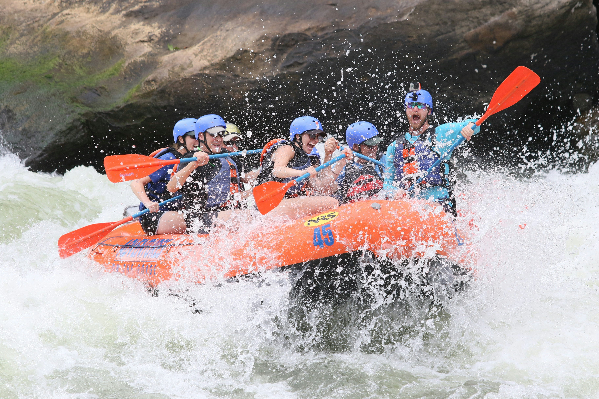

Na Correnteza Rafting, nossa missão é levar você rio abaixo com segurança e emoção na medida certa. Trabalhamos com guias certificados, equipamento revisado a cada saída e roteiros para quem nunca subiu num bote e para quem já perdeu as contas de quantas corredeiras enfrentou.